This is your page. Every number, list and picture on it can be changed, added to, or thrown out. Email Matt what you want and it turns up here. Nothing to install, nothing to log into.
Locked in
- Board 4.7 × 2.4 m, L/U shape, operator well cut out bottom-middle, built in bolted sections
- Scale HO, 1:87, 16.5 mm gauge. OO models run on it too.
- Track Peco Streamline Code 100 flex, 914 mm lengths (SL-100)
- Points Peco Code 100 medium radius on main and yard, Electrofrog or Unifrog
- Curves 438 mm absolute minimum · 600 mm plus on the main · 900 mm plus where it fits
- Control DCC. NCE Power Cab or Digitrax Zephyr
- Wiring Two-wire bus under the board, a dropper from every length of track
- Reversing loop Bottom-left. One auto-reverser, insulated joiners both ends
- Plan Main loop · five-road storage yard right · station and scenery top-left · river with two bridges
- River crossing Curved timber trestle over a gully, board dropped 80–100 mm underneath
- Retaining walls Stepped cut-stone panels, printed
- Scenery Australian bush. Gum trees, scrub, carved strata cuttings, painted dirt
- Planning tool SCARM 2.0.1, set to millimetres
- Track laying Printed repositionable clips while planning. Pins and ballast when final.
Any word unfamiliar? What the words mean, under More.
Still deciding
- Locomotives Two or three, plus maybe one special. See the Locos tab.
- Era 1988 V/Line, or 1990s National Rail. The loco choice settles it.
- Station name Tap to name it
- Point motors Manual or motorised
- Storage yard Hidden or scenic
Station name saves on this phone only.
Notes to self
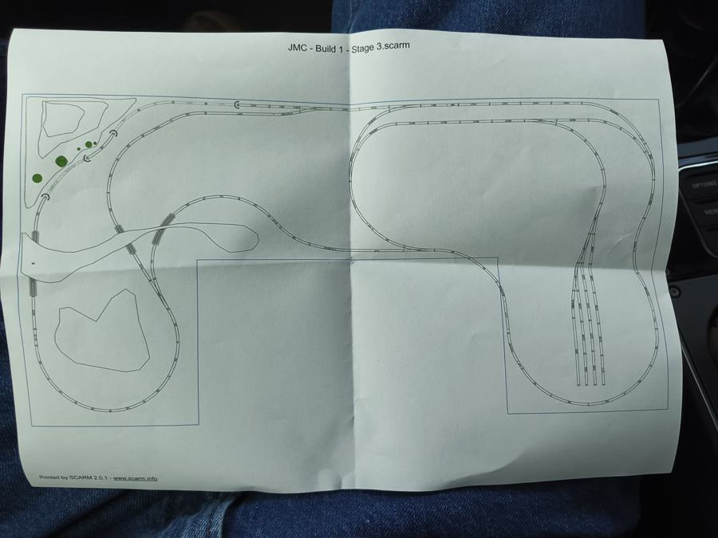
Millimetres and inches
Ones that come up
| Thing | mm | inches |
|---|---|---|
| Flex track length | 914 | 36 |
| Peco small point radius | 610 | 24 |
| Peco medium point radius | 914 | 36 |
| Peco large point radius | 1524 | 60 |
| Setrack R2 curve | 438 | 17¼ |
| Track centres, straight | 50 | 2 |
| Track centres, curves | 55–60 | 2¼ |
| Flyover clearance, railhead to railhead | 90 | 3½ |
| Platform height above rail | 12 | ½ |
| Board, long side | 4700 | 185 |
| Board, short side | 2400 | 94½ |
Will it run on this curve?
Peco radii, Code 100
| Item | Radius | Verdict |
|---|---|---|
| Setrack R1 | 371 mm | Four-wheel wagons and small tank engines only. Avoid. |
| Setrack R2 | 438 mm | Most things run. Long locos and coaches look wrong and can bind. |
| Setrack R3 | 505 mm | Safe for almost everything. Still tight to the eye. |
| Setrack R4 | 572 mm | Good. Bogie coaches and six-axle diesels are fine. |
| Streamline small point | 610 mm | Yard and sidings. Not for the main. |
| Streamline medium point | 914 mm | The standard for this layout. |
| Streamline large point | 1524 mm | Mainline crossovers if space allows. Looks superb. |
| Curved point, inner / outer | 762 / 1524 mm | Useful where a yard leaves a curve. |
What each loco needs
| Loco | Minimum | Happy |
|---|---|---|
| Y class, T class | 438 | 505 |
| A, B, N, X class | 438 | 600 |
| G class, AN class (six axle) | 505 | 600+ |
| Flying Scotsman | 438 | 600+ |
| Long passenger coaches | 505 | 600+ |
Minimum is what the maker says it survives. Happy is where it looks right and stops derailing at speed.
Calculators
Flex track for a curve
One flex length is 914 mm. Always cut the inner rail shorter on a curve, it ends up longer.
Grade, how steep is too steep
| Grade | Meaning |
|---|---|
| up to 2% | Main line. Any loco pulls a sensible train. |
| 2 to 3% | Short trains and branch lines. Scotsman with four coaches starts to slip. |
| 3 to 4% | A couple of wagons and a small loco. Avoid. |
| over 4% | No. |
A grade on a curve behaves steeper. The calculator adds the standard curve penalty. Ease in and out over 300–500 mm or long locos lift a wheel. A flyover needs 90 mm of clearance, which at 2% is 4.5 m of climb.
Trestle bents
A bent is one upright frame of the trestle, like a capital A with extra legs. All the words explained.
Real Victorian trestles used bents about 14 to 16 feet apart, which is 50 mm in HO. Heights listed are bent top to gully floor, so add the footing.
Platform length
Scotsman with tender is about 290 mm. A V/Line N set carriage is about 270 mm. Hornby Mk1 coaches 270 mm. Platform edge 25 mm from track centre on straights, 30 mm plus on curves, 12 mm above the rail.
Track centres and clearances
- Parallel tracks, straight: 50 mm centre to centre. 52 mm if long coaches.
- Parallel tracks, curved: 55 mm at 600 mm radius, 60 mm at 438 mm.
- Flyover: 90 mm railhead to railhead including the roadbed, so about 75 mm of daylight under a girder.
- Tunnel mouth: 60 mm wide, 75 mm high for a single track. Double the width plus 10 for two.
- Platform edge: 25 mm from track centre, 12 mm up.
- Reach: 750 mm is the most anyone reaches comfortably across a board. The operator well solves this.
Choosing the locos
The rule: two or three locos, each with a job. A loco doesn't get a slot until you can name the train it pulls.
Pick a theme first
The slots
Saves on this phone. Tap a filled slot to clear it.
Candidates
Prices are rough, in AUD, for the sound-fitted version where one exists. Lengths are over buffers or couplers. Approximate.
Shopping list
Tick as bought, change quantities. Saves on this phone. Leads with the version that runs best, budget version noted.
Track and control
Wiring
Tools
Scenery starter
Where to buy
- Australian Modeller Peco track, points, tools. Online. australianmodeller.com.au
- Auscision Victorian locos and wagons. Online. auscisionmodels.com.au
- Hearns Hobbies Melbourne, Flinders St. Walk in and ask.
- Walker Models Laser-cut Australian buildings. walkermodels.com
- Bunnings Timber, sample pot paints, PVA, plaster, spray adhesive.
Check the plan
Two ways to get your SCARM design checked. The parts list works right now on this phone. The full design check needs the file itself.
1. Parts list, checked here
In SCARM: Tools → Parts list. It opens in your browser. Save that page, then load it here.
Load the parts list
2. Full design check
Every track end that isn't joined. Ends that nearly meet. Track no train can reach. Kinks, S-curves, tight radii, steep grades, track too close to the edge. Marked up on a picture of the plan with numbers.
This needs the .scarm file. Email it to Matt and the report comes back here on the page.
Email the SCARM fileThe train stopped and I don't know why
- Click the piece before where it stopped. Note the end point coordinates.
- Click the piece after. Note the start point.
- If they differ by even 0.1 mm, they aren't joined. Drag one onto the other until SCARM snaps it.
- Check the angle too. Same position but different angle is a kink, and the train may crawl through it in SCARM and derail on the table.
- Still stuck: email the file. That's exactly what the design check finds automatically.
How to build the scenery
Recipes from the layouts you liked at the show. Order matters more than the products. Unsure of a word? All the words explained.
Bush scrub, the easy one
- Shape: crumpled newspaper or foam offcuts, plaster cloth over the top. Or Sculptamold spread like porridge.
- Paint it dirt: Bunnings sample pot, mid brown. Dry-brush a lighter tan on the cutting faces. Paint everything before any green goes down.
- Ground: brush on watered-down PVA, sprinkle fine turf in two greens.
- The bushy bit: clump foliage pressed into wet PVA in patches. Mixed greens plus a little olive for dead stuff. This is most of the look.
- Logs and dead trees: twigs from the garden. Snap, drop in. Free.
- Fix it: spray 50/50 PVA and water with a drop of dish soap, or cheap hairspray. Nothing moves again.
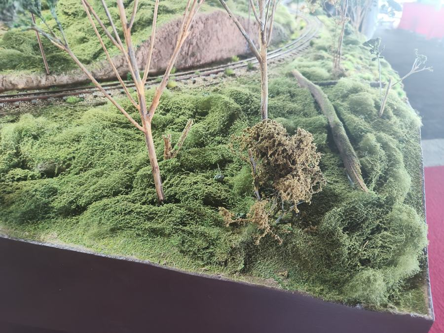
Strata rock cutting
- Build the bank shape, plaster cloth over it.
- Trowel on 5 to 10 mm of Sculptamold or plaster, rough.
- Wait until leather-hard, 20 to 40 minutes. Drag an old hacksaw blade, wire brush or fork horizontally along the face, following the curve. Tilt it so the layers dip. Stab a few vertical cracks with a screwdriver.
- Dry, then paint: mid grey-brown base, black-brown wash thinned like tea, dry-brush pale bone across the ridges.
- Turf into the crevices and over the top lip so grass overhangs.
Alternative: stack 5 mm foam sheets, carve with a knife, rake with a wire brush. Lighter, better for tall cuttings. Boulders: crumple foil, press into wet plaster, peel.
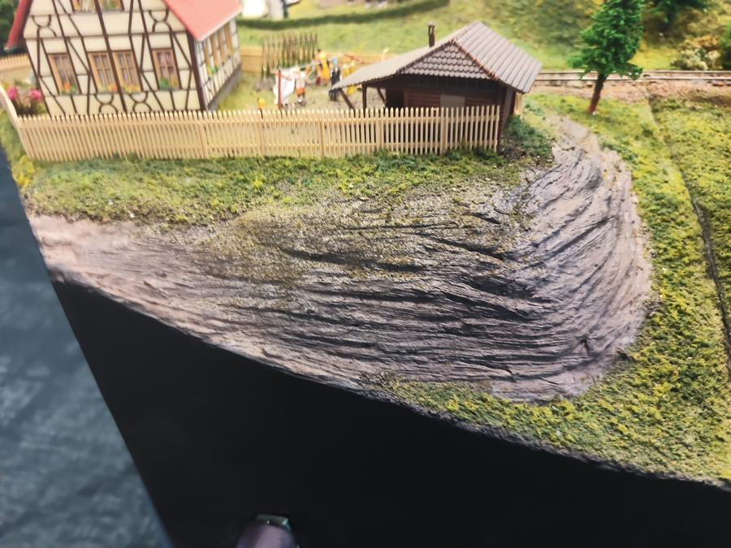
Gum trees
- Armature: sea foam (a dried plant, sold in hobby shops) or twisted florist wire for bigger trees.
- Paint trunks grey-white, then a thin rust or brown wash streaked down. Gum bark, not pine.
- Spray with hairspray or dilute PVA, dust with fine foliage in a blue-green. Sparse. Gums are see-through.
- Plant in a drilled hole with a dab of PVA. Lean a few. Nothing in the bush is vertical.
Budget a couple of hours per big tree. A 4.7 m board wants dozens, so start early and make them in batches while watching TV.
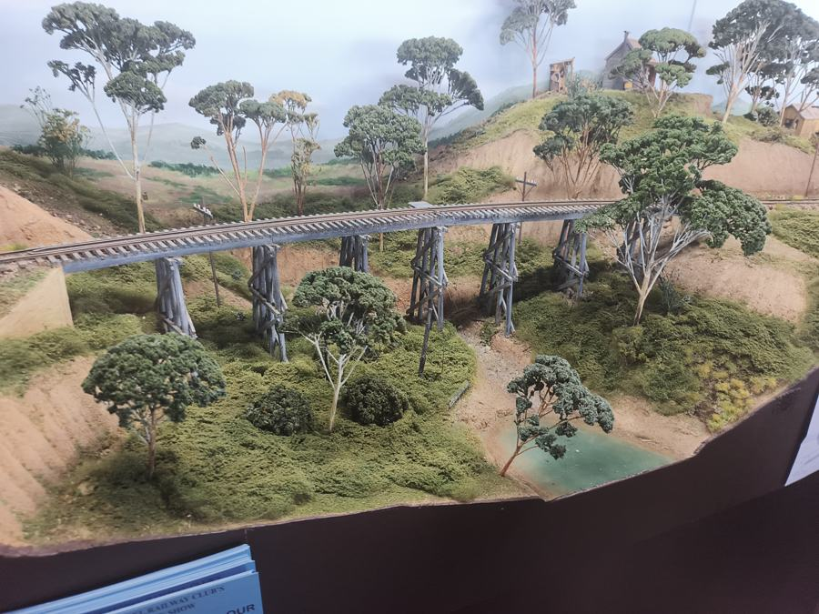
Timber trestle
- Use the trestle calculator for bent count and heights.
- Bents are printed on Matt's printer or built from stripwood on a paper jig, all identical except height.
- Stain everything grey-brown before assembly. India ink in isopropyl alcohol, one coat.
- Glue bents to two stringers on a flat board, then set the whole bridge into the gully. Track sits on the stringers, no ballast.
- Drop the baseboard under the river 80 to 100 mm so there's a real gully. Do this before the board is finished.
Stone retaining wall
- Panels are printed flat, face up, with the capping stone as a separate strip. Any length, all matching.
- Grey primer, then dry-brush tan.
- Pick out a third of the stones one at a time in rust, blue-grey and buff. This is what sells it.
- Dark wash over the lot. Wipe the high spots.
- Ivy is clump foliage teased thin and glued down the joints.
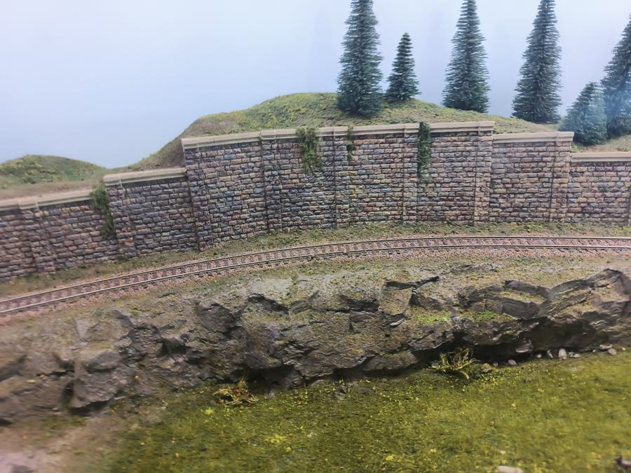
Kits and the tools they need
Craftsman wood kits like the wharf you liked: Bar Mills, FOS Scale, Campbell for American; Walker Models and Outback Model Company for Australian. Start with a small shed kit to learn the technique.
Tools: hobby knife and a box of blades, cutting mat, steel rule, small square, two pairs of tweezers, sanding sticks, pin vise with 0.5–1 mm drills, a gluing jig or right-angle clamps, razor saw, magnifier visor.
Three glues: aliphatic wood glue for structure, thin CA with accelerator for details, canopy glue for windows.
Finishing: prime wood light grey before assembly or it warps. India ink in isopropyl for the weathering wash. Weathering powders for grime. Two-part epoxy for water.
The printer does: pilings, lobster pots, buoys, barrels, crates, boat hulls, wall panels, trestle bents, and eventually a Victorian weatherboard station.
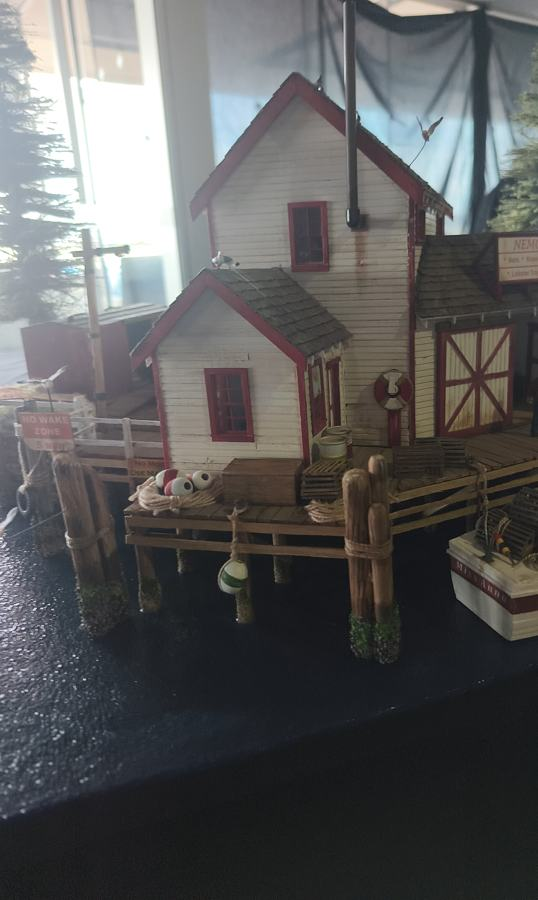
Station
- Platform length is the first number. Scotsman plus four coaches needs about 1.4 m. Use the calculator.
- 12 mm above the rail, edge 25 mm from track centre, 30 mm plus on curves.
- Building: Walker Models Bowman station kit, a Scalescenes card kit printed at home, or a printed VR timber station.
- The dressing sells it: fence, two lamps, a bench, nameboard, six figures, posters.
- VR means red brick or timber with a corrugated roof, not British stone.
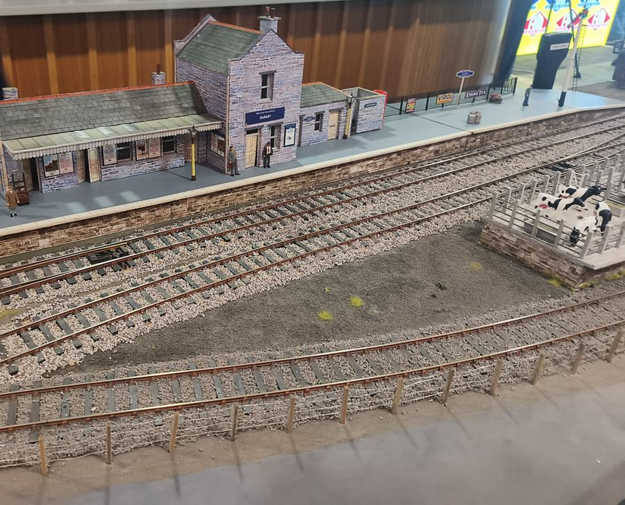
From the show
What you pointed at, and why it matters.
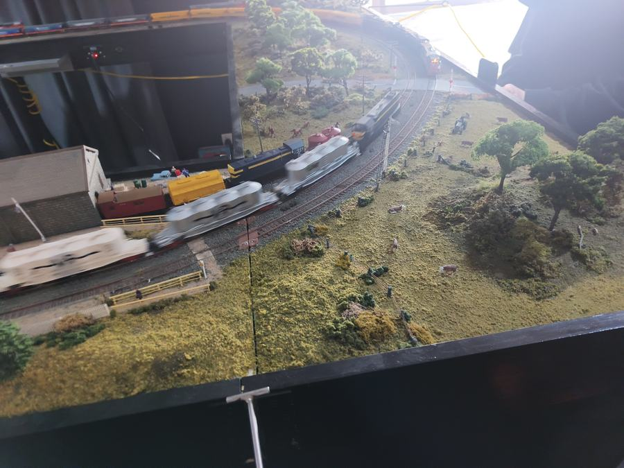
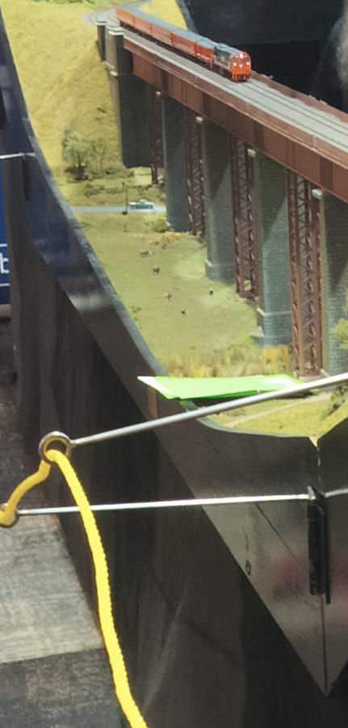
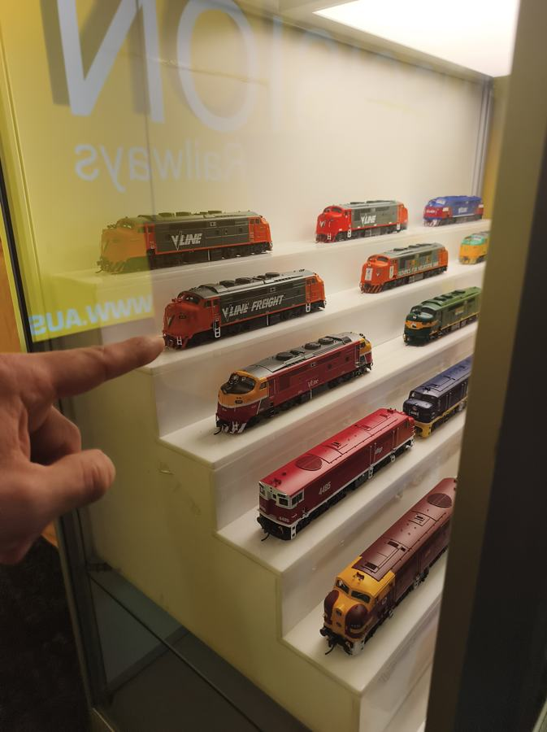
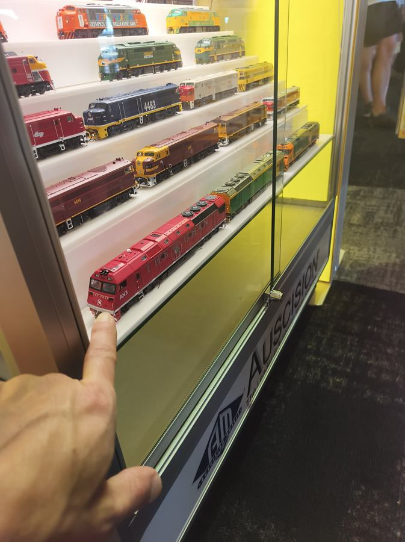
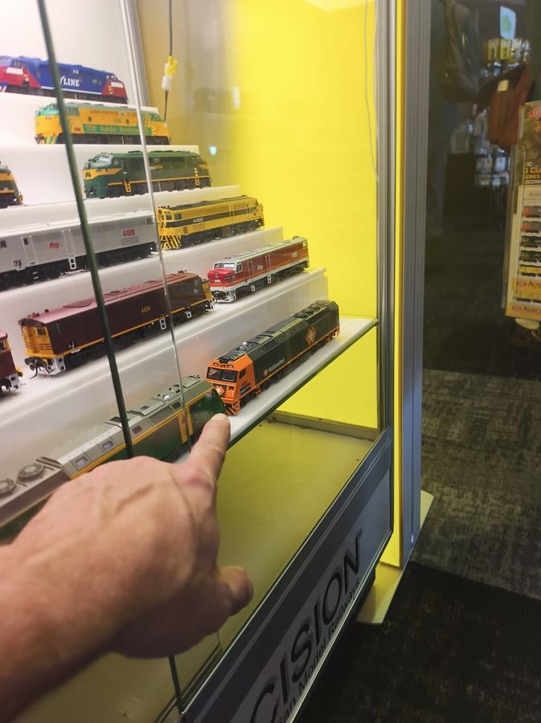
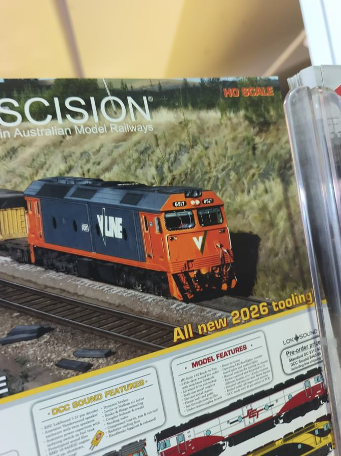
What the words mean
Every term used on this page, in plain English. Missing one? Email it and it gets added.
Bridges
- Bent One upright frame of a trestle bridge. Picture a capital A with extra legs. A trestle is a row of bents standing in the gully, each one cut to the height of the ground under it, with the track carried on top. The calculator counts the bents and tells you each height.
- Stringer The long beams that run from bent to bent and carry the track. Two of them, one under each rail.
- Trestle A bridge made of bents and stringers. Timber, cheap to build, very Australian.
- Viaduct A long bridge on piers, usually stone or steel. The Taradale one is the grand version.
- Pier A solid column holding up a bridge. Stone or concrete.
- Abutment The wall at each end of a bridge where the ground stops.
- Span The distance a bridge crosses.
Track
- Gauge The distance between the rails. HO and OO are both 16.5 mm.
- Scale How much smaller than real. HO is 1:87. OO is 1:76 on the same track.
- Code 100 The rail height, 0.100 inch. Chunky and forgiving. Code 75 is finer and fussier.
- Flex track A 914 mm length of track that bends to any curve. Peco SL-100.
- Setrack Fixed pieces in set curves, R1 to R4. Train-set track. Same rail, less freedom.
- Point Where one track splits into two. Americans say turnout or switch. Peco names them by radius: small, medium, large.
- Frog The V where the two rails of a point cross. The bit wheels bump over.
- Electrofrog A point with a live metal frog. Smooth running, needs the frog's polarity switched. Peco codes with an E.
- Insulfrog A point with a plastic, dead frog. Simplest wiring, short locos can stall on it.
- Unifrog Peco's newer design that works as either. Codes with a U.
- Crossing Two tracks crossing without joining. Sold by angle, 12° or 24°.
- Curved point A point where both routes curve the same way. Handy leaving a curve.
- Sleeper The cross-piece under the rails. Timber or concrete on the real thing, plastic on Peco.
- Railhead The top surface of the rail. Heights and clearances are measured from it.
- Radius How tight a curve is, measured to the centre of the track. Bigger is gentler.
- S-curve A left curve straight into a right curve. Needs a short straight between, or long stock derails.
- Kink A sudden change of direction at a rail joint. Looks fine, derails trains.
- Easement A gentle lead-in where a straight becomes a curve, or a level becomes a grade. Flex track does the horizontal one for free.
- Grade Slope, as a percentage. Rise divided by run. 2% is the sensible limit.
- Track centres The distance between the middles of two parallel tracks. 50 mm straight, 55 to 60 on curves.
- Roadbed The cork or foam strip the track sits on. Gives the raised look and deadens noise.
- Ballast The stones between the sleepers. Glued down last, holds everything.
- Rail joiner The little metal clip that joins two rails. Insulated ones are plastic and break the circuit on purpose.
- Track pin A tiny nail through the sleeper into the board. The final fixing, hidden by ballast.
- Track clip The printed clip that holds track down while you're still moving it around.
- Tracksetta A metal template that holds flex track to an exact radius while you pin it.
Electrics
- DC Old-style control. The controller sets the voltage on the rails, and every loco on that track does the same thing.
- DCC Digital Command Control. Constant power on the rails plus a data signal. Each loco has an address and is driven on its own.
- Decoder The chip inside a DCC loco that listens for its address. Sound decoders add the engine noise and horn.
- DCC Ready Has a socket, no decoder. Add one, about $40.
- DCC Fitted Decoder in, ready to run.
- DCC Sound Fitted, plus a speaker and the noises.
- Command station The box that makes the DCC signal. NCE Power Cab is both the box and the handheld.
- Bus Two thick wires under the board carrying power the full length of the layout.
- Dropper A thin wire from each length of rail down to the bus. Never rely on rail joiners for power.
- Reversing loop A track that lets a train turn round and come back the other way. The rails end up touching the wrong way round, so it needs a gap and a gadget.
- Auto-reverser The gadget. Flips the polarity of the loop the instant a wheel bridges the gap. You never notice it.
- Point motor A small motor or solenoid that throws the point from the controller instead of by finger.
Locos and stock
- Loco The engine. Diesel, steam or electric.
- Rolling stock Everything without a motor. Wagons, coaches, vans.
- Consist A loco plus its train, as one set.
- Bogie The pivoting frame with two or three axles under each end of a loco or coach. A six-axle loco has two bogies of three.
- Hood unit A diesel with a narrow body and a walkway round it, cab set back. The T, X and Y class. The front platform you liked.
- Bulldog A diesel with a rounded full-width nose. The A and B class.
- Tender The wagon behind a steam loco carrying coal and water. Counts as part of the loco for length.
- Livery The paint scheme. V/Line orange, VR blue and gold, BR green.
- Era The years the layout pretends to be. Sets which liveries and wagons belong together.
- Outline Which country's railway a model copies. Australian outline, British outline.
- Coupler The hook that joins vehicles. Knuckle on Aussie and US stock, tension-lock on British. Not compatible, but swappable.
- NEM pocket The standard little slot a coupler clips into, so swapping is a pull and a push.
- Minimum radius The tightest curve the maker says a model survives. Add 150 mm for it to look right.
- Shunter A small loco for pushing wagons around a yard.
- Yard A group of sidings for storing and sorting wagons. Yours has five roads.
- Road One track in a yard. Five roads means five parallel sidings.
- Siding A dead-end track off the main line.
- Main line The track trains actually travel on, as opposed to yards and sidings.
Building and scenery
- Baseboard The table. Yours is 4.7 by 2.4, in bolted sections.
- Operator well The cut-out in the middle you stand in, so you can reach everything.
- Plaster cloth Bandage soaked in plaster. Drape over a shape, wet it, it sets hard. Hills in an hour.
- Sculptamold Plaster mixed with paper pulp. Spreads like porridge, carves when leather-hard. The strata cutting is made of it.
- Leather-hard Plaster that has set enough to hold a shape but is still soft enough to carve. About 20 to 40 minutes in.
- Turf Coloured ground foam, fine as sand. The base grass.
- Clump foliage Ground foam stuck together in lumps. Bushes and scrub. Most of the look you liked.
- Static grass Nylon fibres that stand up when applied with a small electrostatic gadget. Real-looking grass.
- Sea foam A dried plant with tiny branching twigs. Perfect gum tree skeletons.
- Armature The trunk and branches of a model tree before the leaves go on.
- Dry-brush Wipe most of the paint off the brush, then drag it over a texture. Only the high spots catch it.
- Wash Very thin paint that runs into the low spots. India ink in alcohol for wood, black-brown for rock.
- Weathering Making a new model look used. Washes, powders, rust streaks.
- Craftsman kit A building kit of laser-cut wood or card that you cut, glue, paint and weather yourself. The wharf.
- Laser-cut Parts burnt out of thin timber or card by a laser. Precise, and the char is part of the look.
- Card kit A building printed on card. Cheap, quick, surprisingly good. The station was one.
- CA Superglue. Thin CA wicks into a joint. Accelerator sets it instantly.
- Canopy glue Glue that dries clear and won't fog windows. For glazing.
- Aliphatic glue Yellow wood glue. Stronger than PVA, sands cleanly. For structure.
- Pin vise A tiny hand-held drill chuck for holes under 1 mm.
- Rock mould A rubber mould you pour plaster into to make a rock face.
- Strata The layered look of sedimentary rock. Scored into leather-hard plaster.
Software
- SCARM The track planning program. Every piece of track from the Peco catalogue, snapped together on screen, with a test train.
- Parts list SCARM's count of every piece in the plan. Tools, then Parts list. That's the shopping list.
- Endpoint Where a piece of track starts or ends in SCARM. Two pieces are only joined if their endpoints match exactly. The usual reason the test train stops.
Request a printed part
Anything for the layout that could be 3D printed. Wall panels, trestle bents, track clips, a station, pilings, a water tank, a part that doesn't exist. Describe it in your own words. It gets designed and checked for printability, and you get an email back with the design file, a detail sheet as a PDF with every dimension, and a print difficulty summary: how long it takes, what could go wrong, what it's made of. Then it gets printed.
Take a photo, pick one from the phone or computer, drag files here, or paste a screenshot.
On Windows: Win + Shift + S to snip, then Ctrl + V anywhere on this page.
Sizes are optional. If you're not sure, say roughly where it sits on the plan and the rest gets worked out.
Sends straight from this page, photos included. No mail app needed. If it ever fails, email it instead.
Request a SCARM design file
Describe a track plan, or a change to the one you have, in your own words. The aim is a .scarm file that opens straight in SCARM, plus a picture of it and a note on what was assumed. See the note below on where that stands. Then you pull it about in SCARM as usual.
Attach the .scarm file you're working from, or a sketch. Drag, pick, or paste a screenshot.